Systems are transitioning from single-threaded demos to enterprise-scale AI platforms where reliability, high throughput, and fault tolerance are non-negotiable. That shift requires engineers who obsess over performance engineering, distributed orchestration, bottlenecks, and observability as much as model capability. That's the work I do.
| PerfOS | EXPLORING | Performance engineering workbench to design and run k6, Gatling & JMeter tests, spin up mock APIs, forecast capacity, and get AI analysis of results. |
| PerfOSDatagen | EXPLORING | Agentic AI engine that reproduces slow multi-tenant MySQL queries on schema-only synthetic data and tunes them until Avg & P95 latency improve 20%+. |
| Jmeter-Listener-CosmosDB | SHIPPING | Abstract listener for Apache JMeter to stream real-time test execution metrics directly to Azure Cosmos DB. |
| selenium-grid-ecs | SHIPPING | Highly scalable Selenium Grid deployment on AWS ECS using Fargate Spot Containers for distributed testing. |
| pac-sliprovider | SHIPPING | Keptn SLI Provider built for automated performance evaluation and continuous deployment quality gates. |
Issues and pull requests filed upstream — mostly orchestration edge cases and failure modes found while building on these.

Most of what I build starts as an architectural question under load — so I benchmark it, stress it, and engineer what survives. Everything above refreshes itself nightly from the GitHub API; nothing here is a badge service.
If something I've built is useful to you, or wrong, feel free to open an issue or connect.